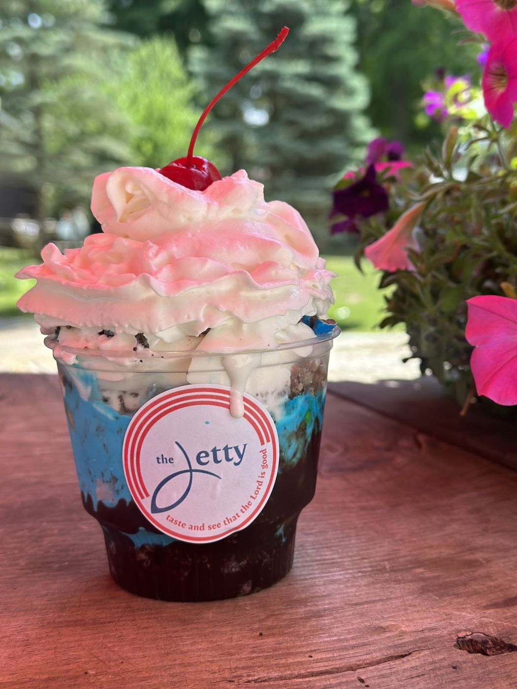
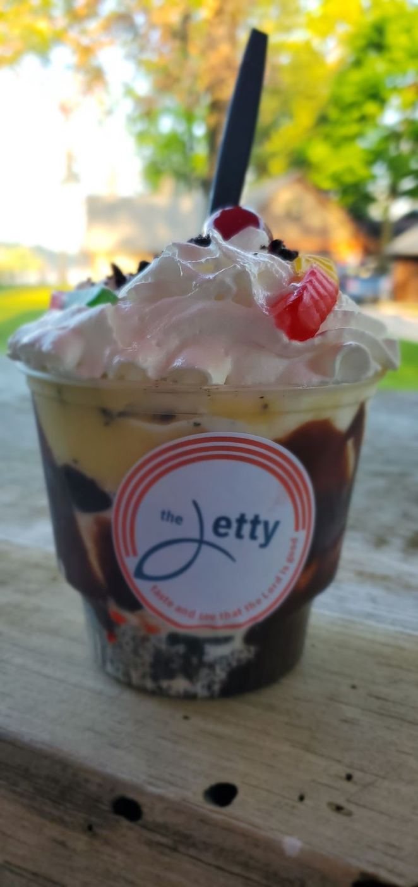
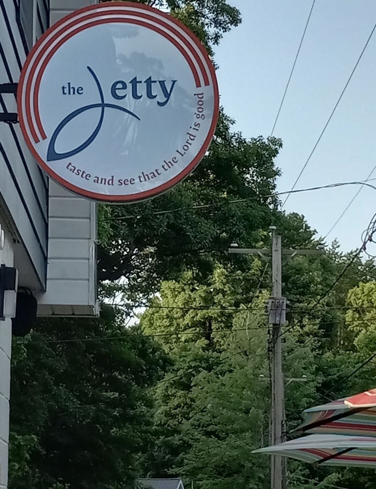
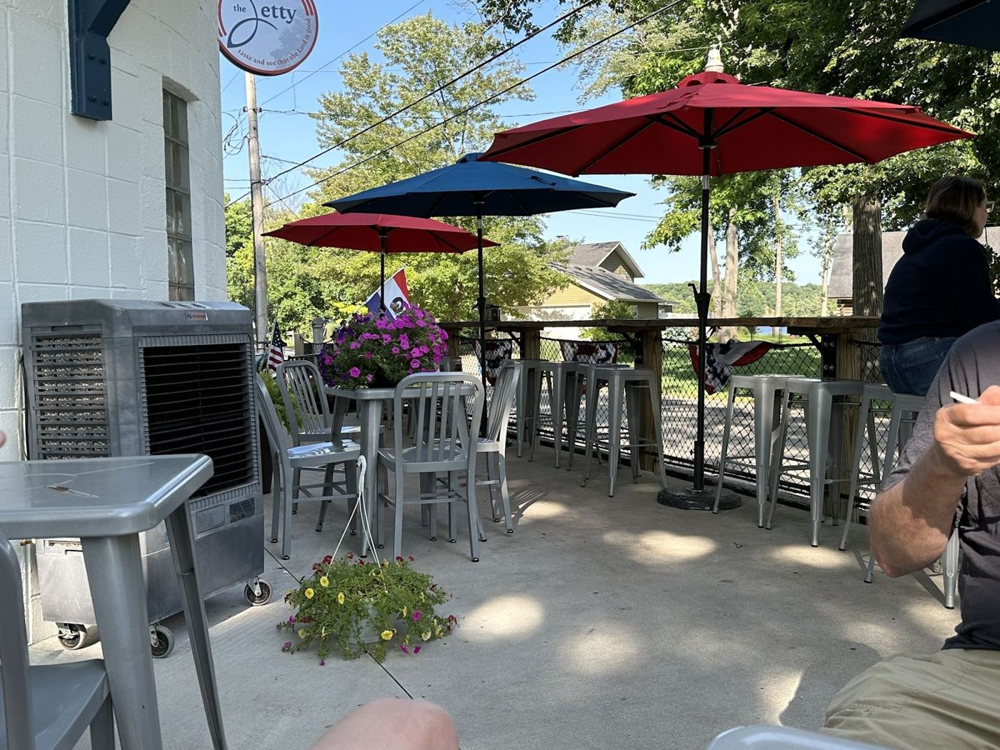
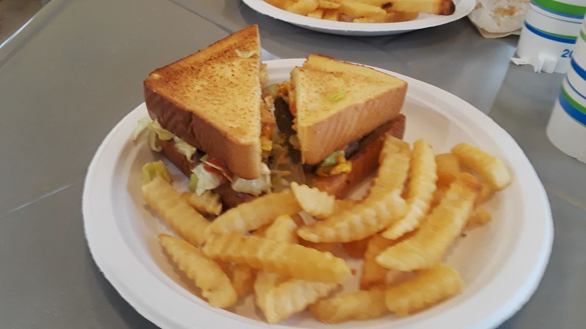

Ice cream by the lake · Newaygo, MI
Big scoops, by the lake.
Soft-serve and hand-dipped ice cream, generous portions and a pickup window on S Croton Hardy Dr.
4.7★ · 124 Google reviews
Call (231) 452-6800What’s scooping
What’s scooping
~ Today at the window ~
- Soft-serve & hand-dipped
A large selection of both, with a good variety of flavors.
- Toppings
Lots of topping options for your cup or cone.
- Generous servings
Big portions at good prices.
- Outdoor seating
A nice seating area outside, made for families.
On the line






Happy customers
Whenever we are in the area, we stop by! If we stay for a whole week, I usually plan to go 4-5 times. They have a good variety of flavor options and wonderful staff. They also support an absolutely amazing ministry (Hub61)
This cute shop serves good ice cream by the lake. The staff were nice and attentive (we had a nice conversation, which turned into a Christian pep talk owing to the "missionary" identity of the place). Hard serve ice cream was great, soft serve had a coconut taste we didn't expect in a German chocolate flavor but which we ended up enjoying no less. We'll be back to keep exploring their extensive menu!
Absolutely lovee this place! My cousins recently bought this building and made it into a beautiful ice cream store. The service is out of this world, they are extremely friendly and nice and they have turned the building into an absolutely beautiful area to bring the family and kids and sit down for ice cream. Definitely stop by if you can!
Thoroughly enjoyed the ice cream, nachos from the food truck and Sunday evening worship! Give them a try!
Window hours
| Mon–Fri | 6–8:30 PM |
| Sat | 12–9 PM |
| Sun | 4–9 PM |
7641 S Croton Hardy Dr, Newaygo, MI 49337
(231) 452-6800